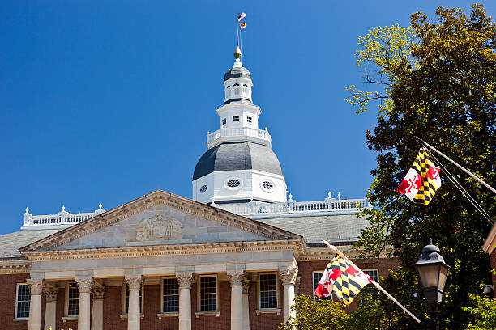

Travel & Registration
Help cover transportation, registration, and housing so that students can attend statewide sessions in Annapolis without worrying about costs.
Giving Tuesday · MSL Champion Campaign
Maryland Student Legislature gives SMCM students a real chamber, real debate, and a real shot at shaping policy. Your support makes sure cost never decides who gets a seat at the table. Help us bring more voices, more campuses, and more perspectives into the room.
Ladder competition ends in:
When you give through the official SMCM Giving Tuesday form using our MSL link, your gift goes to the St. Mary’s College of Maryland Foundation, a 501(c)(3) charitable organization. Donations are tax-deductible as provided by law, and you’ll receive a receipt from the College.
A single gift can mean one more student who can afford to travel, speak on the floor, and discover that their voice actually carries.
The secure form is hosted by St. Mary’s College of Maryland.
Where Your Gift Goes
We’re not just debating in a vacuum. MSL sessions put students into a real legislative simulation rooted in Maryland policy. Your gift makes sure money is never the reason a student can’t participate. Thanks to the generosity of the statewide MSL organization, our chapter was able to attend this past Fall Special Session at UMD College Park, where we had an outstanding 11 members attend over the two-day event as a brand-new chapter.
Help cover transportation, registration, and housing so that students can attend statewide sessions in Annapolis without worrying about costs.
Support bill-writing workshops, public speaking practice, and procedural training so members are confident on the floor.
Our approved proposal allows us to reinvest part of our success back into delegations that help us climb the ladder, strengthening MSL statewide—not just at SMCM.
MSL Champion
I’m serving as the Giving Tuesday Champion for the SMCM MSL Chapter because I’ve seen what this program does for students who never thought they’d speak in a chamber, write policy, or build coalitions beyond campus. I am a firm believer that democracy works only when everyone has the opportunity to participate; my purpose in creating this club was to empower others in the legislative process, just as it once empowered me.
With our statewide connections across MSL delegations and support from alumni, friends, and fellow students, we can hit our ladder goals. But every single donor matters—especially yours.
If you’ve ever believed students should understand how democracy actually works, not just in a textbook but in real-world issues, this is one direct, concrete way to make that happen. We’ve even tied our ladder milestones to chapter-wide incentives to keep things fun as we climb.

Nathan Sanchez
Giving Tuesday Champion • SMCM MSL Chapter

MSL is serious about policy—but the people are the best part.
Incentives & Ladder Goals
The Giving Tuesday ladder tracks votes, not just dollars. Each person who gives at least $10 casts one ladder vote for SMCM MSL. That means a single $10 gift genuinely helps us climb. This campaign is also the main way we’ll provide funds for our members’ fees heading into the Spring session, so every vote directly supports students who want to be in the room.
All participation in these incentives is voluntary, and we’ll always prioritize safety and campus guidelines while we celebrate.
Because the ladder is based on vote counts, not just large one-time gifts, many small donors are just as powerful as a few big ones. If you’re able to give at least $10, that single vote helps our delegation unlock funding for delegate fees, travel, and programming for the Spring session.
Whether you’re an alumnus, a friend, a family member, or a fellow student, your vote for SMCM MSL tells our members that their voices are worth investing in.
How to Give
The form is hosted and processed by St. Mary’s College of Maryland. You’ll receive your receipt directly from the College.
Open the MSL Giving FormDeep Dive
Want to see how we’ve structured this campaign so it doesn’t just boost SMCM, but also helps lift delegations across Maryland? We’ve put together a formal Delegation Support Proposal that explains how ladder results, shared resources, and reinvestment can build a stronger MSL for everyone.
This proposal outlines how chapter success can translate into statewide support, with an emphasis on collaboration, equity between delegations, and long-term sustainability for Maryland Student Legislature.
Gifts made through the official SMCM Giving Tuesday form go to the St. Mary’s College of Maryland Foundation, Inc., a 501(c)(3) tax-exempt charitable organization. Donations are tax-deductible as provided by law. This page is maintained by the SMCM Maryland Student Legislature Chapter to explain how your gift supports our student delegation.
To learn more about Giving Tuesday at St. Mary’s College of Maryland, visit the official SMCM Giving Tuesday page .